X6¶
SYMMEDIAN POINT (LEMOINE POINT, GREBE POINT)
symmedian_point(A, B, C) -> X_6 • Grebe (1847) • Lemoine (1873) • Kimberling X(6) • Search Value \((6, 9, 13)\): \(\frac{24 \sqrt{35}}{143} \approx 0.992908495066\)
X6 (SYMMEDIAN POINT (LEMOINE POINT, GREBE POINT)) constructed at X6 = \(\left(\frac{1673}{295},\; \frac{1176}{295}\right)\) in exact rational coordinates on the Heronian reference triangle \((a, b, c) = (15, 13, 14)\) over \(\mathbb{Q}\) with vertices A = \((0, 0)\), B = \((14, 0)\), C = \((5, 12)\), and area \(\Delta = 84\). Switch tabs above to inspect exact constructions on Right \((3, 4, 5)\), Kepler \((1, \sqrt{\phi}, \phi)\), and Kimberling \((6, 9, 13)\).¶
Constructed Elements
Derived Triangle: Symmedial Triangle △SymaSymbSymc — vertices Syma, Symb, Symc (Cevian triangle of Symmedian Point X6)
Circle: Circumcircle (circumcircle) — Passes through vertices A, B, C; centered at X3 CIRCUMCENTER
Concurrence Lines (Symmedians): A–Syma, B–Symb, C–Symc concurring at X6
Homogeneous Coordinates & Exact Invariants¶

Homogeneous Coordinates of X6 on Heronian \((15, 13, 14)\): orthogonal trilinear struts \((\alpha, \beta, \gamma)\) and signed barycentric sub-triangles \((\Delta_a, \Delta_b, \Delta_c)\).¶
Trilinear Coordinates (\(\alpha : \beta : \gamma = 15 : 13 : 14\)): Dropping orthogonal perpendiculars X6Ta, X6Tb, and X6Tc from X6 to sidelines BC, CA, and AB meets the sides at right-spread pedal feet Ta = \(\left(\frac{2681}{295},\; \frac{1932}{295}\right)\), Tb = \(\left(\frac{133}{59},\; \frac{1596}{295}\right)\), and Tc = \(\left(\frac{1673}{295},\; 0\right)\). The orthogonal strut lengths on \((15, 13, 14)\) are \(d_a = \frac{252}{59}\), \(d_b = \frac{1092}{295}\), and \(d_c = \frac{1176}{295}\), reducing to homogeneous trilinears \(\alpha : \beta : \gamma = 15 : 13 : 14\).
Barycentric Coordinates (\(u : v : w = 225 : 169 : 196\)): Joining X6 to the vertices along X6A, X6B, and X6C forms signed sub-triangles △X6BC, △X6CA, and △X6AB of exact signed areas \(\Delta_a = \frac{1890}{59}\), \(\Delta_b = \frac{7098}{295}\), and \(\Delta_c = \frac{8232}{295}\) (summing to \(\Delta_a + \Delta_b + \Delta_c = 84 = \Delta\)), in homogeneous ratio \(u : v : w = 225 : 169 : 196\).
Reference Triangle |
Field |
Cartesian \((x, y)\) |
Trilinears \(\alpha : \beta : \gamma\) |
Barycentrics \(u : v : w\) |
Sub-Areas \((\Delta_a, \Delta_b, \Delta_c)\) |
Directed Trilinear \((d_a,\, Q_a)\) |
|---|---|---|---|---|---|---|
Heronian \((15, 13, 14)\) |
\(\mathbb{Q}\) |
\(\left(\frac{1673}{295},\; \frac{1176}{295}\right)\) |
\(15 : 13 : 14\) |
\(225 : 169 : 196\) |
\(\left(\frac{1890}{59},\; \frac{7098}{295},\; \frac{8232}{295}\right)\) |
\(\frac{252}{59}\; (Q_a = \frac{63504}{3481})\) |
Right \((3, 4, 5)\) |
\(\mathbb{Q}\) |
\(\left(\frac{16}{5},\; \frac{6}{5}\right)\) |
\(3 : 4 : 5\) |
\(9 : 16 : 25\) |
\(\left(\frac{27}{25},\; \frac{48}{25},\; 3\right)\) |
\(\frac{18}{25}\; (Q_a = \frac{324}{625})\) |
Kepler \((1, \sqrt{\phi}, \phi)\) |
\(\mathbb{Q}(\sqrt{\phi})\) |
\(\left(1,\; \frac{\sqrt{\phi} \left(\phi - 1\right)}{2}\right)\) |
\(1 : \sqrt{\phi} : \phi\) |
\(1 : \phi : \phi + 1\) |
\(\left(\frac{\sqrt{\phi} \left(2 - \phi\right)}{4},\; \frac{\sqrt{\phi} \left(\phi - 1\right)}{4},\; \frac{\sqrt{\phi}}{4}\right)\) |
\(\frac{\sqrt{\phi} \left(2 - \phi\right)}{2}\; (Q_a = \frac{\phi}{2} - \frac{3}{4})\) |
Kimberling \((6, 9, 13)\) |
\(\mathbb{Q}(\sqrt{35})\) |
\(\left(\frac{94}{11},\; \frac{4 \sqrt{35}}{11}\right)\) |
\(6 : 9 : 13\) |
\(36 : 81 : 169\) |
\(\left(\frac{72 \sqrt{35}}{143},\; \frac{162 \sqrt{35}}{143},\; \frac{26 \sqrt{35}}{11}\right)\) |
\(\frac{24 \sqrt{35}}{143}\; (Q_a = \frac{20160}{20449})\) |
Alternate Coordinates7 forms
Trilinears: \(\sin A : \sin B : \sin C\)
Trilinears: \((1 + \cos A)(1 - \cos A + \cos B + \cos C) : :\)
Trilinears: \(\cot B/2 + \cot C/2 : :\)
Barycentrics: \(S_{B} + S_{C} : :\)
Barycentrics: \(S_{A} - S_{\omega} : :\)
Barycentrics: \(\cot A - \cot \omega : :\)
Barycentrics: \(\cot B + \cot C - \cot A + \cot \omega : :\)
Linear Combinations5 combinations
X6 = \((r^{2} + s^{2} + 2rR)\) X1 - \(6rR\) X2 - \(2r^{2}\) X3
X6 = \((1 + \sqrt{3} \tan(\omega ))\) X13 + \((1 - \sqrt{3} \tan(\omega ))\) X14
X6 = \((1 + \sqrt{3} \tan(\omega ))\) X15 + \((1 - \sqrt{3} \tan(\omega ))\) X16
X6 = \((3 + 5 \sqrt{3} \tan(\omega ))\) X17 + \((3 - 5 \sqrt{3} \tan(\omega ))\) X18
(The above four combos for X6 found by Peter Moses, November, 2011)
Incident Central Lines¶
Principal Central Lines Through X6 on Heronian \((15, 13, 14)\).¶
Incenter–Symmedian Line {1, 6, 9} — collinear axis through X1 (Incenter, \(\left(6,\; 4\right)\)), X6, X9 (Mittenpunkt, \(\left(\frac{973}{146},\; \frac{294}{73}\right)\)), with exact Cartesian equation \(4 x - 97 y + 364 = 0\) (spread \(\frac{16}{9425}\) relative to AB).
Brocard Axis {3, 6, 32} — collinear axis through X3 (Circumcenter, \(\left(7,\; \frac{33}{8}\right)\)), X6, X32 (3rd POWER POINT, \(\left(\frac{295967}{58801},\; \frac{230496}{58801}\right)\)), with exact Cartesian equation \(327 x - 3136 y + 10647 = 0\) (spread \(\frac{106929}{9941425}\) relative to AB).
Centroid–Symmedian Point Of The Anticomplementary Triangle Central Line {2, 6, 69} — collinear axis through X2 (Centroid, \(\left(\frac{19}{3},\; 4\right)\)), X6, X69 (Symmedian Point Of The Anticomplementary Triangle, \(\left(\frac{2259}{295},\; \frac{1188}{295}\right)\)), with exact Cartesian equation \(6 x - 293 y + 1134 = 0\) (spread \(\frac{36}{85885}\) relative to AB).
Clawson Point–Orthocenter Of The Intouch Triangle Central Line {6, 19, 65} — collinear axis through X6, X19 (Clawson Point, \(\left(\frac{497}{106},\; \frac{196}{53}\right)\)), X65 (Orthocenter Of The Intouch Triangle, \(\left(\frac{358}{65},\; \frac{256}{65}\right)\)), with exact Cartesian equation \(184 x - 627 y + 1456 = 0\) (spread \(\frac{33856}{426985}\) relative to AB).
X6 lies on the Walsmith rectangular hyperbola, the Thomson cubic.
Full Incident Central Line Catalog127 lines
{1, 9}, {2, 69}, {3, 15}, {4, 53}, {5, 68}, {7, 294}, {8, 594}, {10, 1377}, {13, 14}, {17, 18}, {19, 34}, {21, 941}, {22, 251}, {23, 353}, {24, 54}, {25, 51}, {26, 143}, {27, 1246}, {31, 42}, {33, 204}, {36, 609}, {40, 380}, {41, 48}, {43, 87}, {57, 222}, {60, 1169}, {64, 185}, {66, 427}, {67, 125}, {70, 1594}, {74, 112}, {75, 239}, {76, 83}, {77, 241}, {88, 89}, {98, 262}, {99, 729}, {100, 739}, {101, 106}, {105, 1002}, {110, 111}, {145, 346}, {157, 248}, {160, 237}, {162, 1013}, {169, 942}, {181, 197}, {190, 192}, {194, 384}, {210, 612}, {226, 1751}, {256, 1580}, {264, 287}, {274, 1218}, {279, 1170}, {281, 1146}, {282, 1256}, {291, 985}, {292, 869}, {297, 317}, {305, 1241}, {314, 981}, {330, 1258}, {344, 1332}, {354, 374}, {442, 1714}, {493, 1583}, {494, 1584}, {513, 1024}, {517, 998}, {519, 996}, {523, 879}, {560, 1631}, {561, 720}, {588, 1599}, {589, 1600}, {593, 1171}, {595, 1126}, {598, 671}, {603, 1035}, {644, 1120}, {657, 1459}, {662, 757}, {688, 882}, {689, 703}, {691, 843}, {692, 1438}, {694, 1084}, {706, 1502}, {717, 789}, {750, 899}, {753, 825}, {755, 827}, {840, 919}, {846, 1051}, {893, 1403}, {909, 1415}, {911, 1461}, {939, 1802}, {943, 1612}, {947, 1622}, {959, 961}, {963, 1208}, {967, 1790}, {971, 990}, {986, 1046}, {1073, 3343}, {1096, 1859}, {1112, 1177}, {1131, 1132}, {1139, 1140}, {1166, 1601}, {1173, 1614}, {1174, 1617}, {1195, 1399}, {1201, 1696}, {1214, 1708}, {1327, 1328}, {1362, 1416}, {1398, 1425}, {1423, 1429}, {1718, 1781}, {1826, 1837}, {1836, 1839}, {1854, 1858}, {3342, 3351}, {3344, 3350}
Functional Relations & Conjugates¶
Conjugate & Homothetic Partners of X6 on Heronian \((15, 13, 14)\).¶
Isogonal Conjugate: X2 (Centroid, homogeneous barycentrics \(1 : 1 : 1\)) at \(\left(\frac{19}{3},\; 4\right)\), joined along {2, 6} (isogonal conjugate via \(a^2 vw : b^2 wu : c^2 uv\)).
Isotomic Conjugate: X76 (3rd BROCARD POINT, homogeneous barycentrics \(33124 : 44100 : 38025\)) at \(\left(\frac{807525}{115249},\; \frac{456300}{115249}\right)\), joined along {6, 76} (isotomic conjugate via \(vw : wu : uv\)).
Complement: X141 (Complement Of Symmedian Point) at \(\left(\frac{1966}{295},\; \frac{1182}{295}\right)\), joined along {6, 141} — complement of X6 dilated from X2 by factor \(-\frac{1}{2}\).
Anticomplement: X69 (Symmedian Point Of The Anticomplementary Triangle) at \(\left(\frac{2259}{295},\; \frac{1188}{295}\right)\), joined along {6, 69} — anticomplement of X6 dilated from X2 by factor \(-2\).
Circumcircle Inverse: Inversion in circumcircle centered at X3 = \(\left(7, \frac{33}{8}\right)\) (\(Q_R = \frac{4225}{64}\)) maps X6 along {3, 6} (\(Q(X6, X3) = \frac{397657}{222784}\), scale \(Q_R / Q = \frac{87025}{2353}\)) to X187 (Inverse-In-Circumcircle Of X) at \(\left(- \frac{99169}{2353},\; - \frac{2352}{2353}\right)\).
Full Functional Relations Catalog134 relations
X6 = midpoint of Xi and Xj for these (i,j): (32, 5028), (39, 5052), (69, 193), (125, 5095), (187, 5107), (1689, 1690)
X6 = reflection of Xi in Xj for these (i,j): (1, 1386), (2, 597), (3, 182), (67, 125), (69, 141), (159, 206), (182, 575), (592, 2), (694, 1084), (1350, 3), (1351, 576), (1352, 5), (32113, 468)
X6 = isogonal conjugate of X2
X6 = isotomic conjugate of X76
X6 = cyclocevian conjugate of X1031
X6 = complement of X69
X6 = anticomplement of X141
X6 = crossdifference of every pair of points on line X30X511
X6 = insimilicenter of 1st and 2nd Kenmotu circles
X6 = exsimilicenter of circumcircle and (1/2)-Moses circle
X6 = harmonic center of circumcircle and Gallatly circle
X6 = perspector of polar circle wrt Schroeter triangle
X6 = Xi-Ceva conjugate of Xj for these (i,j): (1, 55), (2, 3), (3, 154), (4, 25), (7, 1486), (8, 197), (9, 198), (10, 199), (54, 184), (57, 56), (58, 31), (68, 161), (69, 159), (74, 1495), (76, 22), (81, 1), (83, 2), (88, 36), (95, 160), (98, 237), (110, 512), (111, 187), (222, 221), (249, 110), (251, 32), (264, 157), (275, 4), (284, 48), (287, 1503), (288, 54), (323, 399), (394, 1498), (1613, 3360)
X6 = cevapoint of Xi and Xj for these (i,j): (1, 43), (2, 194), (31, 41), (32, 184), (42, 213), (51, 217)
X6 = Xi-cross conjugate of Xj for these (i,j): (25, 64), (31, 56), (32, 25), (39, 2), (41, 55), (42, 1), (51, 4), (184, 3), (187, 111), (213, 31), (217, 184), (237, 98), (512, 110)
X6 = crosspoint of Xi and Xj for these (i,j): (1, 57), (2, 4), (9, 282), (54, 275), (58, 81), (83, 251), (110, 249), (266, 289)
X6 = crosssum of Xi and Xj for these (i,j): (1, 9), (3, 6), (4, 1249), (5, 216), (10, 37), (11, 650), (32, 206), (39, 141), (44, 214), (56, 478), (57, 223), (114, 230), (115, 523), (125, 647), (128, 231), (132, 232), (140, 233), (142, 1212), (188, 236), (226, 1214), (244, 661), (395, 619), (396, 618), (512, 1084), (513, 1015), (514, 1086), (522, 1146), (570, 1209), (577, 1147), (590, 641), (615, 642), (1125, 1213), (1196, 1368), (5408, 5409)
X6 = Xi-Hirst inverse of Xj for these (i,j): (1, 238), (2, 385), (3, 511), (15, 16), (25, 232), (56, 1458), (58, 1326), (523, 1316), (1423, 1429)
X6 = Xi-line conjugate of Xj for these (i,j): (1, 518), (2, 524), (3, 511)
X6 = Xi-aleph conjugate of Xj for these (i,j): (1, 846), (81, 6), (365, 1045), (366, 191), (509, 1046)
X6 = Xi-beth conjugate of Xj for these (i,j): (6, 604), (9, 9), (21, 1001), (101, 6), (284, 6), (294, 6), (644, 6), (645, 6), (651, 6), (652, 7), (666, 6)
X6 = exsimilicenter of circumcircle and (1/2)-Moses circle; the insimilicenter is X5013
X6 = homothetic center of outer Napoleon triangle and pedal triangle of X15
X6 = homothetic center of inner Napoleon triangle and pedal triangle of X16
X6 = trilinear product of vertices of Thomson triangle
X6 = orthocenter of XiX_jX_k for these (i,j,k): (2, 4, 1640), (3, 4, 879), (3, 64, 2435)
X6 = intersection of tangents at X3 and X4 to Darboux cubic K004
X6 = radical trace of circumcircle and Ehrmann circle
X6 = one of two harmonic traces of Ehrmann circles; the other is X23
X6 = intersection of tangents to 2nd Brocard circle at PU(1) (i.e., pole of line X39X512 wrt 2nd Brocard circle)
X6 = intersection of diagonals of trapezoid PU(1)PU(39)
X6 = intersection of diagonals of trapezoid PU(6)PU(33)
X6 = intersection of diagonals of trapezoid PU(31)PU(33)
X6 = the point in which the extended legs P(6)U(31) and U(6)P(31) of the trapezoid PU(6)PU(31) meet
X6 = trilinear pole of PU(i) for these i: 2, 26
X6 = crosssum of PU(4)
X6 = trilinear product of PU(8)
X6 = barycentric product of PU(i) for these i: 1, 17, 113, 114, 115, 118, 119
X6 = crossdifference of PU(i) for these i: 24, 41
X6 = midpoint of PU(i) for these i: 45, 46, 54
X6 = bicentric sum of PU(i) for these i: 45, 46, 54, 62
X6 = radical center of {circumcircle, Parry circle, Parry isodynamic circle}; see X2
X6 = vertex conjugate of PU(118)
X6 = eigencenter of orthocentroidal triangle
X6 = eigencenter of Stammler triangle
X6 = eigencenter of outer Grebe triangle
X6 = eigencenter of inner Grebe triangle
X6 = eigencenter of submedial triangle
X6 = perspector of unary cofactor triangles of every pair of homothetic triangles
X6 = perspector of ABC and unary cofactor triangle of any triangle homothetic to ABC
X6 = perspector of Stammler triangle and unary cofactor triangle of circumtangential triangle
X6 = perspector of Stammler triangle and unary cofactor triangle of circumnormal triangle
X6 = perspector of submedial triangle and unary cofactor triangle of orthic triangle
X6 = perspector of unary cofactor triangles of extraversion triangles of X7 and X9
X6 = center of the orthic inconic
X6 = perspector of ABC and mid-triangle of Mandart-incircle and Mandart-excircles triangles
X6 = homothetic center of medial triangle and cross-triangle of ABC and inner Grebe triangle
X6 = homothetic center of medial triangle and cross-triangle of ABC and outer Grebe triangle
X6 = 4th-anti-Brocard-to-anti-Artzt similarity image of X3
X6 = perspector of pedal and anticevian triangles of X3
X6 = perspector of ABC and mid-triangle of 1st and 2nd anti-Conway triangles
X6 = perspector, wrt Schroeter triangle, of polar circle
X6 = center of the perspeconic of these triangles: ABC and Ehrmann vertex
X6 = pole, wrt circumcircle, of Lemoine axis
X6 = pole wrt polar circle of trilinear polar of X264 (line X297X525)
X6 = Xi-isoconjugate of Xj for these {i,j}: {1, 2}, {6, 75}, {31, 76}, {91, 1993}, {110, 1577}, {338, 1101}, {1994, 2962}
X6 = perspector of medial triangle and half-altitude triangle
X6 = intersection of tangents to Kiepert hyperbola at X2 and X4
X6 = vertex conjugate of foci of Steiner inellipse
X6 = similitude center of ABC and orthocentroidal triangle
X6 = similitude center of 4th Brocard and circumsymmedial triangles
X6 = barycentric product of (nonreal) circumcircle intercepts of the line at infinity
X6 = eigencenter of anti-orthocentroidal triangle
X6 = perspector of Aquarius conic
X6 = trilinear pole wrt tangential triangle of Lemoine axis
X6 = trilinear pole wrt symmedial triangle of Lemoine axis
X6 = trilinear pole wrt circumsymmedial triangle of Lemoine axis
X6 = crosspoint of X2 and X194 wrt both the excentral and anticomplementary triangles
X6 = pedal antipodal perspector of X5004 and of X5005
X6 = vertex conjugate of Jerabek hyperbola intercepts of Lemoine axis
X6 = perspector of orthic triangle and tangential triangle, wrt orthic triangle, of the circumconic of the orthic triangle centered at X4 (the bicevian conic of X4 and X459)
X6 = perspector of excentral triangle and extraversion triangle of X9
X6 = excentral-to-ABC functional image of X9
X6 = center of the MacBeath circumconic
X6 = center of the cosine circle (the 2nd Lemoine circle)
X6 = one of the foci of the Lemoine inellipse (the other being X2)
X6 = antipode of X32113 in Walsmith rectangular hyperbola
X6 =
QA-P23 (Inscribed Square Axes Crosspoint) of quadrangle ABCX2; see http://www.chrisvantienhoven.nl/quadrangle-objects/15-mathematics/quadrangle-objects/artikelen-qa/51-qa-p23.html
Four-Triangle Symbolic Invariance¶

Four-Triangle Invariance of X6 across Heronian (15, 13, 14), Right (3, 4, 5), Kepler (1, √φ, φ), and Kimberling (6, 9, 13).¶
Across the four canonical algebraic number fields — Heronian (15, 13, 14) over \(\mathbb{Q}\) (\(X6 = \left(\frac{1673}{295},\; \frac{1176}{295}\right)\)), Right (3, 4, 5) over \(\mathbb{Q}\) (\(X6 = \left(\frac{16}{5},\; \frac{6}{5}\right)\)), Kepler (1, √φ, φ) over \(\mathbb{Q}(\sqrt{\phi})\) (\(X6 = \left(1,\; \frac{\sqrt{\phi} \left(\phi - 1\right)}{2}\right)\)), and Kimberling (6, 9, 13) over \(\mathbb{Q}(\sqrt{35})\) (\(X6 = \left(\frac{94}{11},\; \frac{4 \sqrt{35}}{11}\right)\)) — X6 remains strictly interior (\(\Delta_a, \Delta_b, \Delta_c > 0\)) across all four acute, Pythagorean right, golden right, and obtuse scalene triangles, preserving its exact homogeneous law \(u : v : w\) without floating-point approximation.
Related Collection 1 Topic Guides
T_1: Isogonal Conjugate • T_5: Circle Inversion • T_8: The Brocard Axis • T_12: The Fuhrmann & Spieker Central Lines • T_13: The Isogonic & Napoleon Central Lines • T_15: The Circumcircle • T_18: The Apollonian Circles • T_19: The Brocard & Orthocentroidal Circles • T_21: Orthic & Tangential Triangles • T_23: Incentral & Excentral Triangles
Notes¶
X6 in Navigation: A talk about the symmedian point, by William Lionheart.
X6 and other triangle centers play a fundamental part in Yuri I. Loginov’s “Energy methods for single-position passive radar based on special points of a triangle”, downloadable in Russian (EnergyMethodsRussian.pdf) or as an English translation (EnergyMethodsEnglish.pdf).
Let A'B'C' be the pedal triangle of an arbitrary point X, and let S(X) be the vector sum XA' + XB' + XC'. Then
S(X) = (0 vector) if and only if X = X6.
The “if” implication is equivalent to the well known fact that X6 is the centroid of its pedal triangle, and the converse was proved by Barry Wolk (Hyacinthos #19, Dec. 23, 1999).
X6 is the radical trace of the 1st and 2nd Lemoine circles. (Peter J. C. Moses, 8/24/03)
X6 is the perspector of ABC and the medial triangle of the orthic triangle of ABC. (Randy Hutson, 8/23/2011)
Ross Honsberger, Episodes in Nineteenth and Twentieth Century Euclidean Geometry, Mathematical Association of America, 995. Chapter 7: The Symmedian Point.
Let A' be the center of the conic through the contact points of the incircle and the A-excircle with the sidelines of ABC. Define B' and C' cyclically. Let A″ be the center of the conic through the contact points of the B- and C- excircles with the sidelines of ABC. Define B″ and C″ cyclically. The triangles A'B'C' and A″B″C″ are perspective at X6. See also X25, X218, X222, X940, X1743. (Randy Hutson, July 23, 2015)
The tangents at A, B, C to the Thomson cubic K002 concur in X6. Let H_a be the foot of the A-altitude. Let B_a, C_a be the feet of perpendiculars from H_a to CA, AB, resp. Let A' be the orthocenter of H_aB_aC_a, and define B' and C' cyclically. The lines AA', BB', CC' concur in X6. (Randy Hutson, November 18, 2015)
Let J_a, J_b, J_c be the excenters and I the incenter of ABC. Let K_a be the symmedian point of JbJcI, and define K_b and K_c cyclically. Then K_aK_bK_c is perspective to J_aJ_bJ_c at X6. (Randy Hutson, February 10, 2016)
Let A'B'C' be the triangle described in ADGEOM #2697 (8/26/2015, Tran Quang Hung); then X6 = X6467-of-A'B'C'. (Randy Hutson, June 27, 2018)
X6 is the perspector of every pair of these triangles: anticevian triangle of X3, submedial triangle, unary cofactor triangle of submedial triangle, unary cofactor triangle of the intangents triangle, unary cofactor triangle of the extangents triangle. (Randy Hutson, June 27, 2018)
Let A'B'C' be the tangential triangle of the Jerabek hyperbola. Let A″ be the pole wrt circumcircle of line B'C', and define B″, C″ cyclically. The lines A’″, B'B″, C'C″ concur in X6. (Randy Hutson, November 30, 2018)
Let A'B'C' be the half-altitude (midheight) triangle. Let L_A be the line through A parallel to B'C', and define L_B and L_C cyclically. Let A″ = L_B∩L_C, and define B″, C″ cyclically. The lines A’″, B'B″, C'C″ concur in X6. (Randy Hutson, November 30, 2018)
X6 is the unique point that is the centroid of its pedal triangle. (Randy Hutson, June 7, 2019)
Let A'B'C' be any one of {Lucas(t) central triangle, Lucas(t) tangents triangle, Lucas(t) inner triangle} (for arbitrary t). Let A″ be the trilinear pole of line B'C', and define B″ and C″ cyclically. The lines AA″, BB″, CC″ concur in X6. (Randy Hutson, July 11, 2019)
Let M_aM_bM_c be the medial triangle, and H_aH_bH_c the orthic triangle. Let A* be the centroid of AM_aH_a, and define B* and C* cyclically. A*B*C* is inversely similar to ABC, and the lines M_aA*, M_bB*, M_cC* concur in X6. (Randy Hutson, July 11, 2019)
X6 is the intersection of the isotomic conjugate of the polar conjugate of the Euler line (i.e., line X2X6), and the polar conjugate of the isotomic conjugate of the Euler line (i.e., line X4X6). (Randy Hutson, July 11, 2019)
X6 is the pole of the Euler line wrt each conic passing through each of the following sets of four points: {X13, X14, X15, X16}, {X13, X14, X17, X18}, {X13, X14, X61, X62}, {X15, X16, X17, X18}, {X17, X18, X61, X62}. (Randy Hutson, January 17, 2020)
Let O_A be the circle centered at the A-vertex of the 2nd Brocard triangle and passing through A; define O_B and O_C cyclically. X6 is the radical center of O_A, O_B, O_C. (Randy Hutson, August 30, 2020)
In the plane of a triangle ABC, let
O_a= circle with diameter BC, and defineO_bandO_ccyclically;
A'= apex of equilateral triangle on side BC, and defineB'andC'cyclically;
A_b=BA'∩O_a, and defineB_candC_acyclically;
A_c=CA'∩O_a, and defineB_aandC_bcyclically;
A″=B_cB_a∩C_aC_b, and defineB″andC″cyclically.
The triangle A″B″C″ is perspective to ABC, and the perspector is X6. (Dasari Naga Vijay Krishna, April 19, 2021)
Let P and Q be distinct points in a plane, and let T be a triangle rigidly rotating about P. Let X be a triangle center, and let
X_T= X-of-T;
O= a circle with centerQ';{A, B, C} = vertices of
T;
A'= inverse of A inO, and defineB'andC'cyclically;
T'=A'B'C';
X'_T= X-of-T'.
If
X= Xk for k = 3, 6, 15, 16, 61, 62, then the locus ofX'_Tis a conic.Videos:
Inversive Image of Pivoting Triangle, Part II: Conic Loci of X3 and X6 of Inversive (Dan Reznik, August 15, 2021)
Let Γ denote the circumcircle. The trilinear polar of every point on Γ passes through X6; conversely, the trilinear pole of every line through X6 lies on Γ. The trilinear polar of every point on the Lemoine axis (the polar of X6 with respect to Γ) is a line tangent to the Brocard inellipse; conversely, the trilinear pole of every line tangent to the Brocard inellipse lies on the Lemoine axis. (Dan Reznik, February 3, 2023)
Let P be a point in the plane of T = ABC, and let T'=A'B'C' be the cevian triangle of P. Let A″ = BC∩B'C', and define B″ and C″ cycllically. By Desargues’ theorem, the points A″,B″,C″ lie on the perspectrix of the ktriangles T and T'. Let K_a be the circle that passes through the points A,A',A″, and define K_b and K_c cyclically. As is well known, if P=X1, then the circles K_a,K_b,K_c meet in X15 and X16, and their radical axis is the Brocard axis. We offer the following new observation. The locus of P such that K_a,K_b,K_c intersect in exactly two points, Z_1 and Z_2, is the curve Q066, which is the Stammler quartic (the isogonal image of the Stammler hyperbola). The curve Q066 passes through the excenters and the triangle centers Xk for k=1, 2, 4, 254, and others, listed in Q066, Stammler quartic) . Moreover, the line Z_1Z_2 passes through the point X6-of-T. See the figures in Q066 and line Z1Z2 . (Bernard Gibert and Dan Reznik, February 12, 2023)